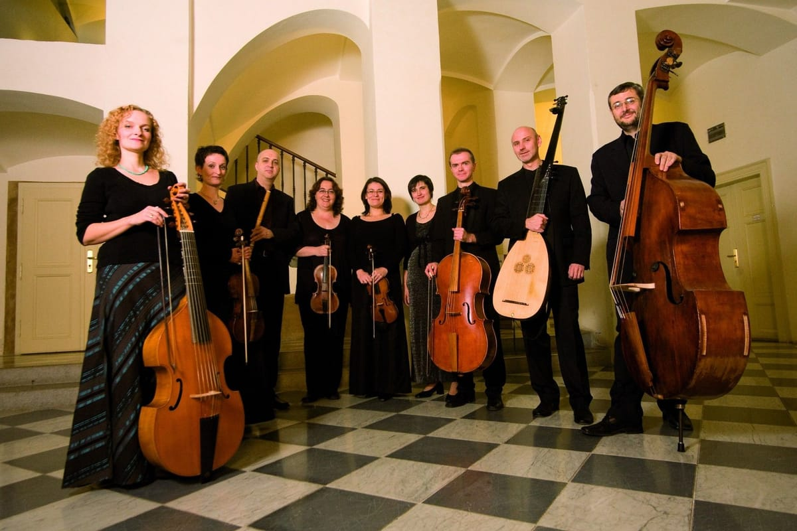

Industria Musical

La industria musical está conformada por las empresas e individuos que ganan dinero creando, divulgando y vendiendo música. La industria musical en su conjunto vive de la creación y la explotación de la propiedad intelectual musical. Compositores y letristas crean canciones, letras y arreglos que se interpretan en directo sobre el escenario, se graban y distribuyen a los consumidores o se licencian para cualquier otro tipo de uso
El mercado musical se encuentra integrado por numerosas empresas que buscan obtener dinero produciendo y comercializando música. Es importante destacar que a lo largo del tiempo este nicho de mercado ha tenido que evolucionar, esto debido a los cambios tecnológicos que día día van surgiendo.El «know-how» del negocio de la música, es decir, el conocimiento y los procesos del producto que se venderá, ha hecho que las compañías discográficas sean grandes compañías que gastan grandes sumas de dinero para crear productos sólidos que sean mejores y más eficientes financieramente. Al investigar esto, serán más decisivos en el éxito del marketing y la distribución de productos de sonido.
La mayoría de los particulares y organizaciones, que trabajan en la industria son: autores y compositores que crean canciones nuevas y piezas musicales; los cantantes, músicos, conductores y directores musicales que hacen música; las compañías y profesionales que crean venden grabaciones musicales y/o partituras (Ej., editores musicales, productores musicales, estudio de grabación, ingenieros, marcas discográficas, al por menor y tiendas musicales en línea, organizaciones de derecho de ejecución); y aquellos que ayudan a organizar las interpretaciones musicales en vivo (ingenieros en sonido, agente de preservación, promotores, salas de concierto, equipo callejero).
La industria de la música también incluye una gama de profesionales que asisten a los cantantes y músicos con sus carreras musicales (representantes de talento, representantes de arte, representante de negocios, representantes legales); aquellos que transmiten contenido musical en audio y vídeo (satélite, estaciones de radio en Internet, radio transmisión y estacones de televisión); emprendedores y críticos musicales, DJs; profesores y educadores de música; fabricante de instrumentos musicales; al igual que muchos otros.
Aspectos Económicos
Probabilidad:
la música es un producto intangible en el que no puede medir su nivel de éxito o demanda de manera detallada, cómo se hace en la comercialización de un bien básico, ya que el consumo de sonido funciona y la satisfacción del público. Se realiza a nivel subjetivo (lo que es bueno para algunos puede ser malo para otros).
Tendencias:
El comportamiento de la compra de material musical por parte del consumidor está muy influenciado por las relaciones culturales y sociales del entorno en el que vive, además de los gustos por la moda, las tendencias populares (fechas especiales, por ejemplo, Navidad). Estilos de vida y hábitos de entretenimiento (películas, libros, viajes, etc).
Incertidumbre:
No se sabe si el producto producido por la compañía discográfica será bien recibido por el público. Por otro lado, este mismo público no sabe si les gustará lo que van a comprar, por lo que hay información errónea sobre el futuro del producto.
Lujo:
la música no es un producto esencial para el consumidor, de esta manera, si los ingresos de un comprador se deterioran, dejaría de comprar este tipo de artículo, en este sentido, la situación económica, el poder adquisitivo y el tamaño del mercado del país (PIB) determina el grado de inversión de la etiqueta.
Es importante señalar que, en la actualidad, el mercado de la música digitalizada ha descendido e incrementando considerablemente, puesto que desde cualquier dispositivo digital los usuarios pueden acceder a aplicaciones para descargar música y videos de música. Una de las aplicaciones más usadas es el de descargar música de YouTube (página web que permite descargar música gratis), Spotify Music es otra página web ideal para escuchar y descargar lo más nuevo y videos digitales en streaming.
La Música en la Actualidad
En la actualidad, existe una gran diversidad de «música» que se degrada socialmente por su vacío, su escaso valor artístico y ético; que están presentes en las áreas más diversas de la vida cotidiana en las que construyen sistemáticamente una estandarización en niños y jóvenes a través de la cual promueven un proceso de deterioro cultural que de ninguna manera contribuye a la construcción de un gusto artístico, a la formación de audiencias, mucho menos a la educación en valores.
No todo lo que se escucha hoy en día es realmente «música». Porque cuando es auténtico, aunque su difusión da como resultado ganancias económicas, no es una mercancía, ni tampoco es vulgar o exclusivo, un artículo de adorno o una moda que ofende la inteligencia y la sensibilidad humanas.
La melodía tiene un componente cultural muy fuerte, acá se adhieren las estructuras melódicas occidentales. Esta, tiene una dimensión fundamentalmente horizontal con progresivos sucesos en el tiempo, combinando ritmo y tono.Por el contrario, al ser la música un arte, es socialmente constructiva y edificante para la cultura, y ayuda con sus potencialidades a construir una sociedad plenamente humana.
Si la melodía tenía un componente horizontal, la armonía es eminentemente vertical. Ésta cumple la función de acompañamiento, marco y base de las melodías. Hablar de armonía es hablar de acordes y sus cadencias. Un acorde es un conjunto de 3 o más notas que se tocan o se perciben simultáneamente. La nota más seria del acorde recibe el nombre de nota fundamental y es lo que le da el nombre al acorde. El orden de la nota fundamental en su escala correspondiente nos da el grado del acorde y, por lo tanto, su función.
Evolución del consumo de música
En la década de los 60 el rock ‘n’ roll golpea fuerte … los beatles, elvis lo hacen es el momento del giro, un baile nacido del rock ‘n’ roll, a finales de los 60, el rock nació, como tal, más pesada (rock ‘n’ roll) es el rock psicodélico (janis joplin, the doors, jimi hendrix).
En la década de los 70 nace el punk (el choque, las pistolas, los ramones, el glam rock con david bowie, que surgirá con más fuerza más adelante) es la era del zeppelin llevado, reina, purple profundo, hard rock (ac / dc). Sus primeros pasos en estos años, siendo esta vez lo que le da a la música un sello muy propio de esta generación, su rudeza y espíritu para crear sonidos que dejen un impacto en la comunidad, con características de rebelión contra la sociedad.
En la década de los 80 ya había nacido el heavy metal, pero aparece la nueva ola de heavy metal, con grupos como Judas Priest y Iron Maiden. Thrash metal nació a principios de los 80 (metallica, megadeth), es el apogeo del glam rock, con beso y guns ‘n’ roses, comenzando un estilo que hasta hoy en dia son los conciertos de masas (música de los 80). Desde el 2000 en adelante, hay tendencias que toman las cosas de los estilos mencionados anteriormente, como metalcore, metal melódico y otros.
A la llegada del nuevo milenio, la electrónica nació con gran fuerza, se escuchaba en los locales nocturnos, combinando luces y sonidos de baile, y luego se desarrollaron géneros rápidamente, que además son parte de la moda. Hoy en día que la música se crea y se ve como un objeto que se puede comercializar según el momento e incluso produce problemas y controversias es el caso del reggaetón pues algunos consideran que este género atrajo el aumento de crímenes e impulsó la sexualidad precoz. Perdiendo la esencia de la música de antaño, música infantil, la música Pop y muchos otros géneros, que consistían en buscar buenos ritmos, músicos talentosos que marcarán las nuevas edades, sin tener que pensar en el dinero, sino en un modo de vida.